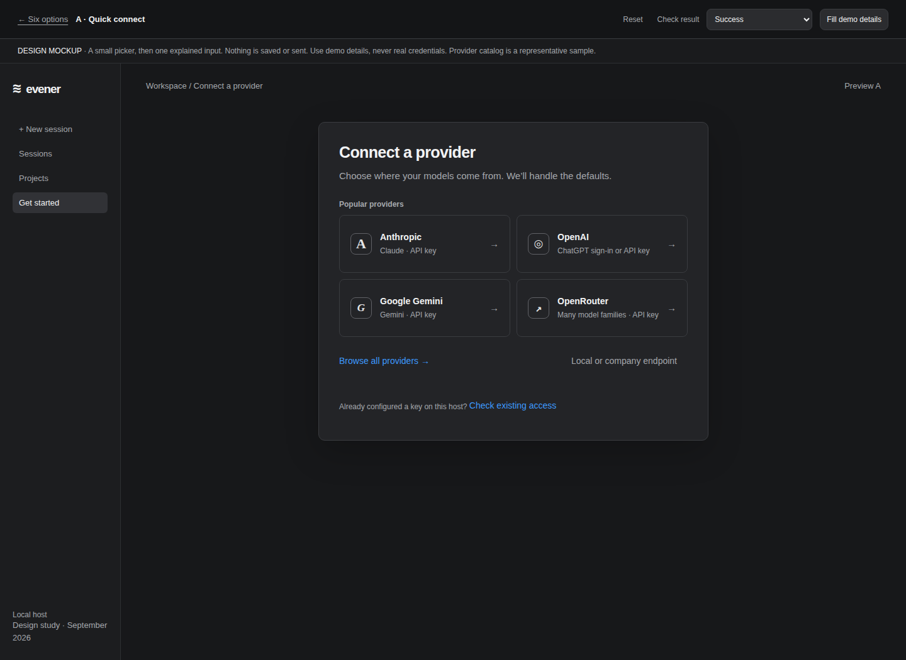

A / Compact, shared flow
Quick connect
Choose a provider. The same panel becomes a single explained credential step, then a result.
Best for: one consistent flow from settings, launch, and the model chooser. Tradeoff: hides the directory while connecting.